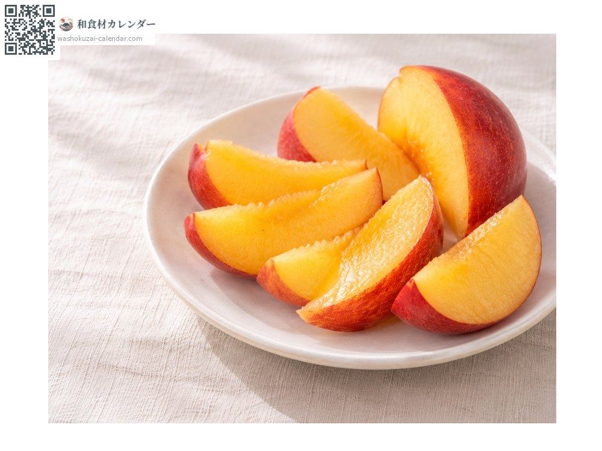
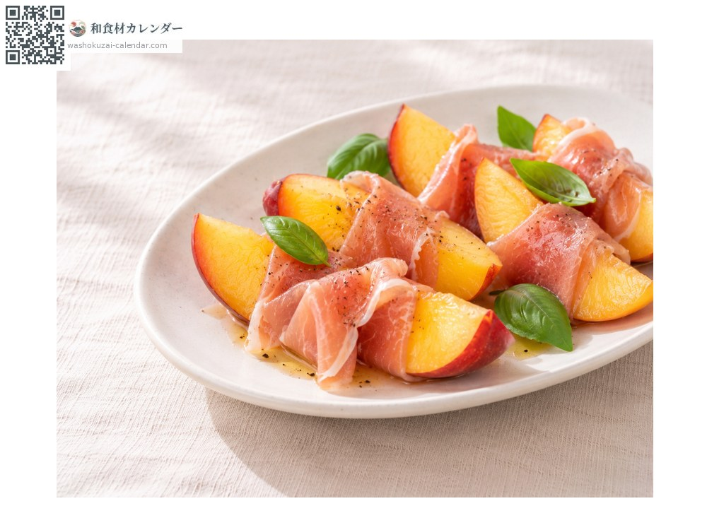
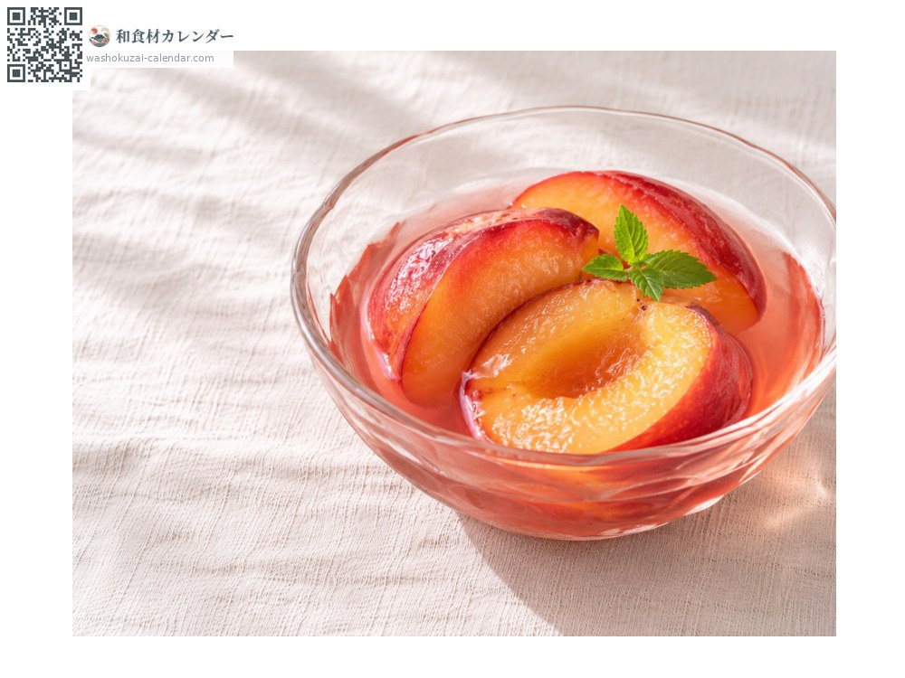
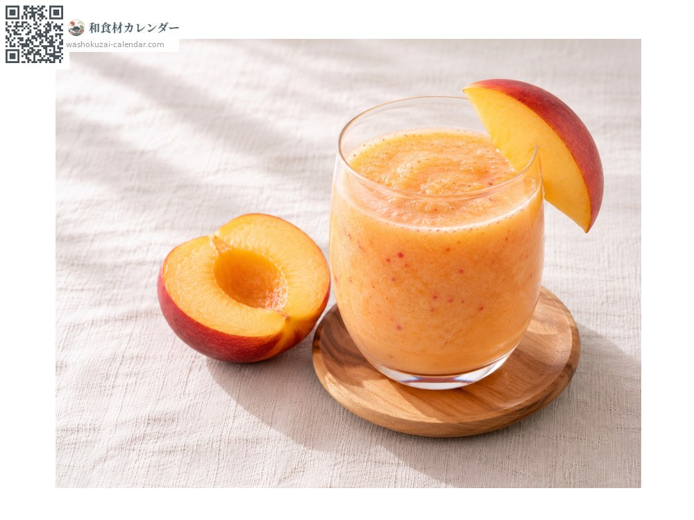

ผลไม้
เนคทารีน
ネクタリン ねくたりん
ชื่ออื่นzubaimomo, momo
อร่อยที่สุดในเดือน ก.ค., ส.ค.

ช่วงที่อร่อยที่สุด
ม.ค.
ก.พ.
มี.ค.
เม.ย.
พ.ค.
มิ.ย.
ก.ค.
ส.ค.
ก.ย.
ต.ค.
พ.ย.
ธ.ค.
ช่วงอร่อยที่สุดมีจำหน่าย
วิธีปรุง

ทานสด
หั่นเป็นชิ้นทั้งเปลือก ไม่มีขนจึงไม่ต้องปอก

กับแฮมดิบ
วางแฮมดิบบนชิ้นเนคทารีน รสหวานเข้ากับรสเค็ม

คอมโพต
ต้มทั้งเปลือก น้ำเชื่อมจะเป็นสีชมพูอ่อน

สมูทตี้
ปั่นกับโยเกิร์ต
วิธีเลือก
สีแดงเงางาม กลิ่นหอม กดเบา ๆ แล้วนิ่มเล็กน้อยคือพร้อมทาน
วิธีเก็บรักษา
ผลที่ยังแข็งให้บ่มที่อุณหภูมิห้อง เมื่อนิ่มแล้วแช่เย็นและรีบรับประทาน
แหล่งผลิตหลัก
เกร็ดน่ารู้
เป็นพีชพันธุ์ที่ไม่มีขน ภาษาจีนเรียกว่า "พีชน้ำมัน" เนื้อแน่นกว่าพีช มีทั้งรสหวานและเปรี้ยว ชื่อมาจากเน็กตาร์ เครื่องดื่มของเทพเจ้าในตำนานกรีก จังหวัดนางาโนะเป็นแหล่งผลิตหลัก